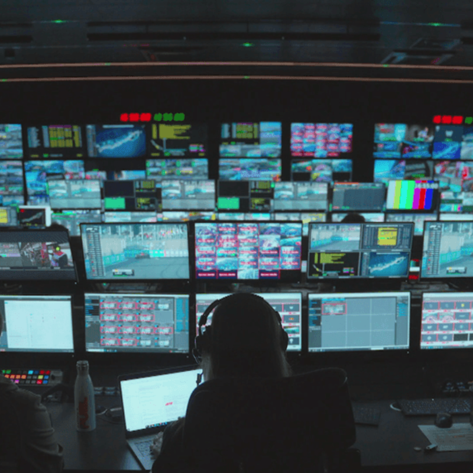

DISEÑO Y DESARROLLO
El diseño y desarrollo del monoplaza es un proceso continuo. Comienza con el diseño del concepto del coche. Los ingenieros y diseñadores crean la estructura básica, definiendo aspectos como la aerodinámica, el chasis, los neumáticos y los motores. Todo se basa en simulaciones y pruebas en túneles de viento para mejorar la eficiencia y la velocidad del coche. A medida que avanza la temporada, el desarrollo se enfoca en mejorar áreas específicas según el rendimiento observado en las carreras. Sin embargo, a partir de mitad de la temporada, el desarrollo del monoplaza se centra más en la temporada siguiente que en la presente. El caso de la temporada 2025 es representativa de esto. El año que viene, la FIA implementará un nuevo reglamento a efecto de nuevos motores eléctricos. Es por esto, que los equipos se concentrarán más en el desarrollo para la temporada que viene más que en la de este año. Todo sin olvidar, que este año también se lucha por un campeonato.
IT Y DATA SCIENCE
En la Fórmula 1, IT y Data Science son esenciales para mejorar el rendimiento de los coches y tomar decisiones estratégicas. El departamento de IT se encarga de mantener todos los sistemas tecnológicos funcionando correctamente. Esto incluye la gestión de servidores, bases de datos y redes, lo que permite que los ingenieros y los estrategas accedan a datos cruciales en tiempo real durante las carreras. Por otro lado, los científicos de datos analizan grandes cantidades de datos recopilados de los coches y de la pista. Utilizan herramientas y algoritmos para predecir cómo se comportarán los coches, identificar tendencias y encontrar oportunidades para mejorar el rendimiento. Por ejemplo, pueden estudiar el desgaste de los neumáticos o cómo afectan las condiciones climáticas al rendimiento del coche. Estos datos permiten tomar decisiones más informadas, optimizando la estrategia en carrera y mejorando el diseño del coche para futuras competiciones.

GESTIÓN Y MARKETING
En la Fórmula 1, gestión y marketing son claves para el éxito tanto dentro como fuera de la pista. El equipo de gestión se encarga de tomar decisiones estratégicas que afectan a toda la organización. Esto incluye la planificación de los recursos, el presupuesto, las relaciones con los patrocinadores y la logística general. Los gerentes de equipo y los directores aseguran que cada área, desde la ingeniería hasta la estrategia de carrera, funcione de manera eficiente. El marketing se centra en promover la imagen del equipo y atraer a más seguidores y patrocinadores. Esto incluye la gestión de las redes sociales, la organización de eventos, la creación de contenido para los medios de comunicación y el desarrollo de campañas publicitarias. Además, el marketing busca crear una conexión emocional con los fanáticos, mostrando el lado humano de los pilotos y el equipo, lo que ayuda a aumentar el seguimiento global y las oportunidades de patrocinio. El marketing es fundamental para que el equipo sea rentable y crezca en popularidad.